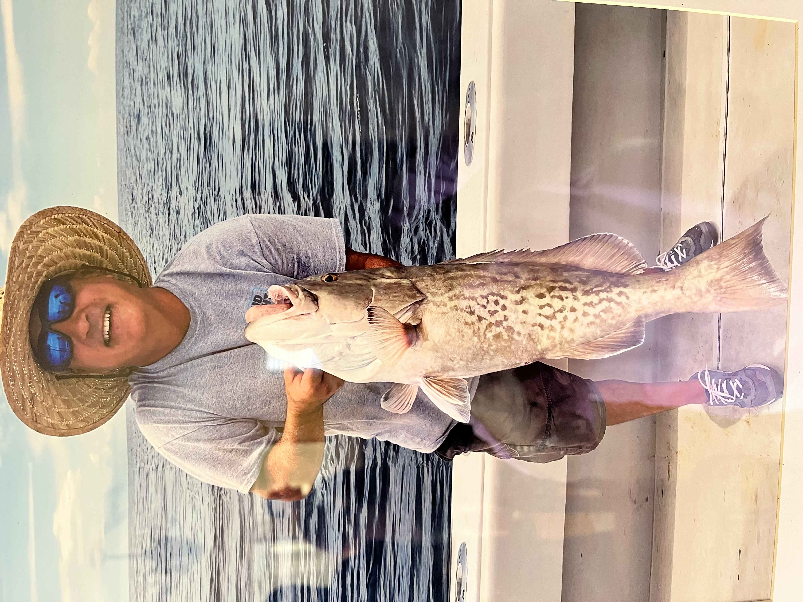
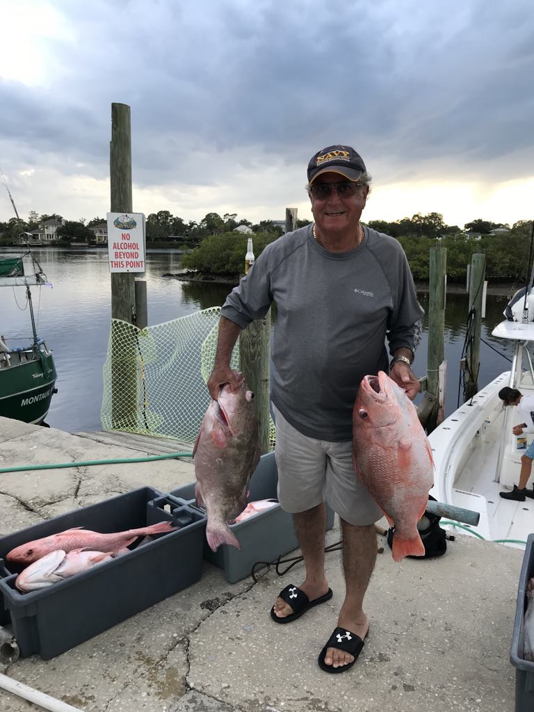
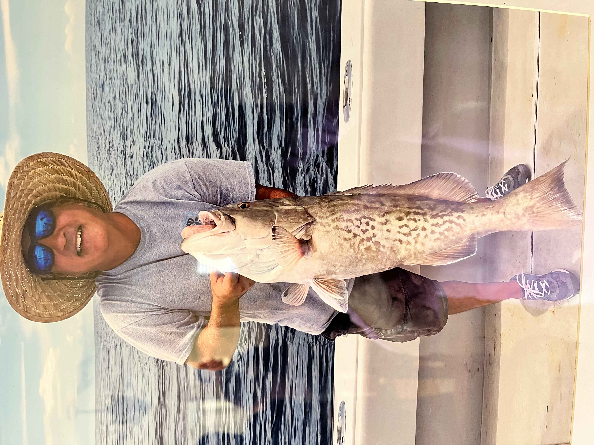
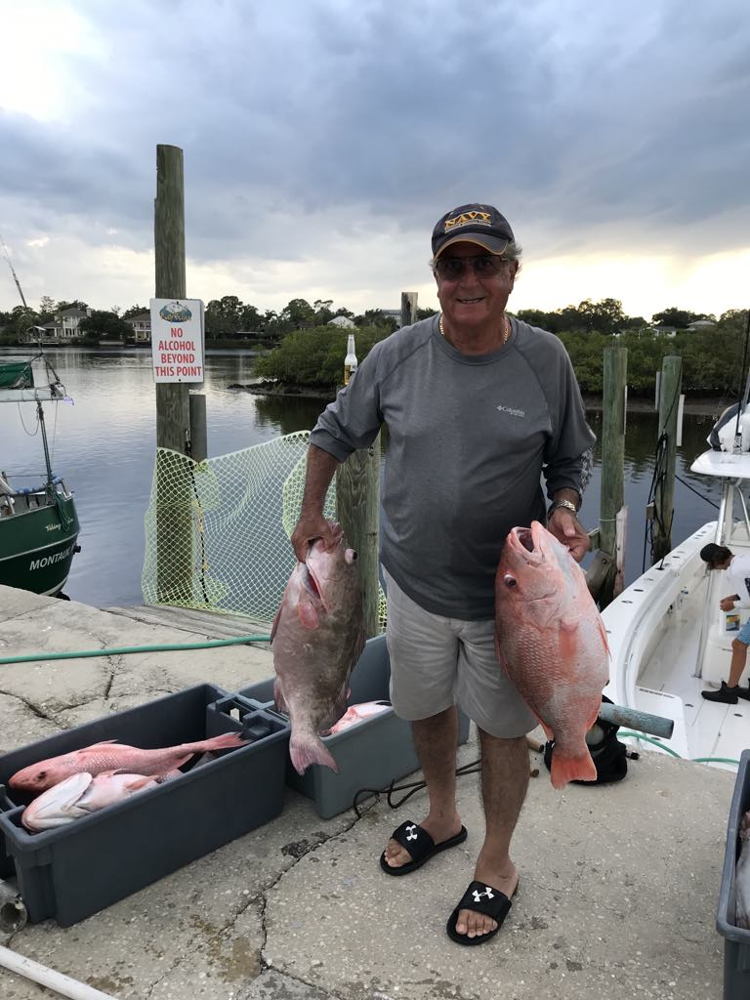

Embark on a journey with fellow fishing enthusiasts. We're dedicated to sharing the best tips, gear reviews, and top fishing spots to enhance your fishing adventures.
Get detailed insights and reviews on the latest fishing gear to ensure you're well-equipped for your next trip.
Top Fishing Spots Explore the best fishing locations, from hidden gems to well-known hotspots.
Get detailed insights and reviews on the latest fishing gear to ensure you're well-equipped for your next trip.
Top Fishing Spots Explore the best fishing locations, from hidden gems to well-known hotspots.
Latest Articles & Posts:
 



>> "When I make my day trips, the most important planning consideration is what type of fish I plan to target and how." - Tyler Deck.
>> "I truly love fishing from my kayak, and I always enjoy the friends I meet and the camaraderie I experience on a party boat, but some of my most productive days of fishing have come on days where I was fishing from shore all day long." - S. Choufe
>> "A successful trip “down the shore” starts with a game plan." - Lalah
Fisherman's Life in Tarpon Springs
8600 Dodecanese Blvd.
Tarpon Springs, Fl 34689
888-555-5555
888-555-5555